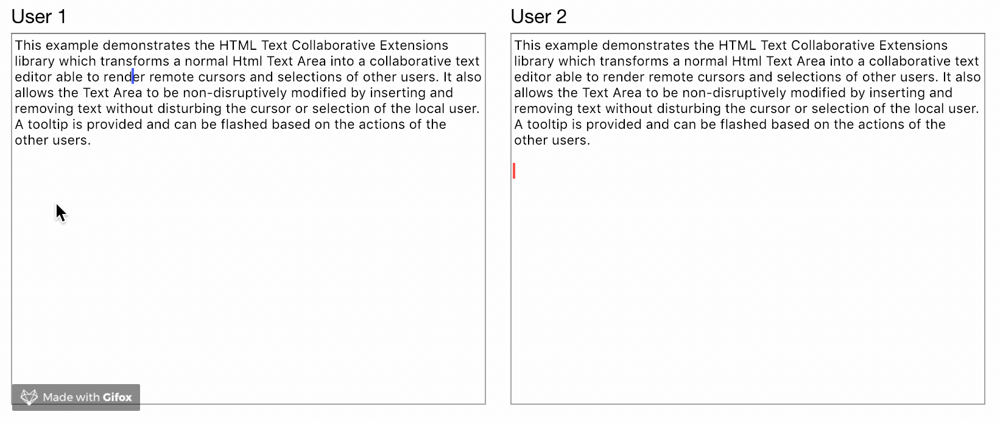

In this tutorial built a simple text editor based on a plain HTML <textarea> element, using the a Convergence RealTimeModel, RealTimeString, and RangeReferences. The result supports realtime editing of text data along with shared cursors and selections. We used the Color Assigner and Collaborative Text Extensions to simplify the code. The result should be a user experience similar to Figure 3 Below:

Figure 3: Tutorial Result
The complete code for this tutorial can be found on git hub here: https://github.com/convergencelabs/textarea-tutorial